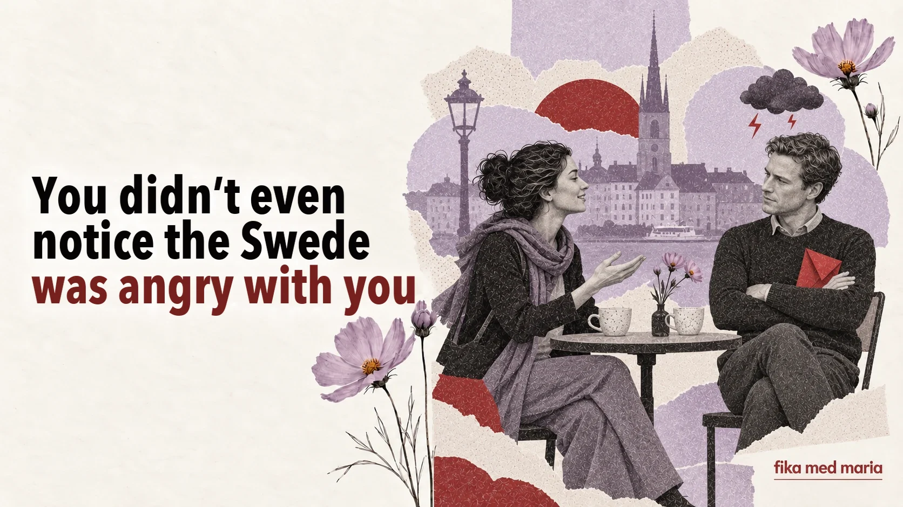

You didn’t even notice the Swede was angry with you

Imagine a colleague saying Det vore bra om du kunde skicka rapporten lite tidigare nästa gång. You hear a calm voice, the conditional mood and the word lite. It sounds like nothing more than a friendly suggestion.
In fact, the report has already become a problem.
Swedish displeasure often doesn’t raise its voice. It makes the phrasing less categorical – but the message no less serious.
Why direct translation doesn’t help
The phrase Det vore bra om… can be translated as “It would be good if…”. In Ukrainian this sometimes sounds like a wish you’re free to ignore. In a Swedish work context it can be a very specific demand, expressed gently.
Compare:
- Skicka rapporten tidigare nästa gång. – Send the report earlier next time.
- Kan du skicka rapporten tidigare nästa gång? – Can you send the report earlier next time?
- Det vore bra om du kunde skicka rapporten lite tidigare nästa gång. – It would be good if next time you could send the report a little earlier.
Grammatically, the third version is the softest. In terms of the message, all three can mean the same thing: next time the report has to come in earlier.
Cushion words
To keep criticism from sounding like an attack, people often surround it with words that soften how it’s put:
- kanske – maybe;
- lite – a little;
- eventuellt – possibly, if needed;
- jag tänker att… – I think that…;
- skulle vi kunna… – could we…;
- det vore bra om… – it would be good if…;
- jag är inte helt säker på att… – I’m not quite sure that…
For example:
Jag tänker att vi kanske behöver se över det här en gång till.
Literally: “I think that maybe we need to go over this again.” The practical meaning may be simpler: “This needs to be redone.”
Three levels of Swedish displeasure
1. A cautious signal
Det blev kanske inte riktigt som vi hade tänkt oss.
Perhaps it didn’t quite turn out the way we’d planned.
It isn’t necessarily a disaster, but the other person isn’t happy with the result.
2. A clear problem, put gently
Vi behöver nog prata om hur det här fungerar.
We probably need to talk about how this is working.
The word nog doesn’t remove the need to talk. On the contrary, the conversation is, in effect, already scheduled.
3. Patience at its limit
Det här fungerar faktiskt inte.
This actually isn’t working.
When the conditional forms and softening disappear, the situation is most likely already serious.
Arga lappar: conflict on paper
A genre of its own in Sweden – angry notes in shared spaces: in the laundry room, the stairwell, the office kitchen or by the bins.
They can start very politely:
Hej! En liten påminnelse om att…
Hi! A little reminder that…
And then comes a detailed description of who sorts their rubbish wrongly, leaves fluff in the tumble dryer or takes someone else’s slot in the laundry room.
The phrase en liten påminnelse doesn’t mean the problem is small. It means the writer is trying to keep the tone socially acceptable.
How to respond to this kind of criticism
The worst strategy is to ignore what was said because it was said gently. It’s better to show in a few words that you’ve heard the message:
- Jag förstår. Jag ser till att det blir klart tidigare nästa gång.
- Tack för att du säger till. Jag ska tänka på det.
- Jag förstår hur du menar. Ska vi gå igenom vad som behöver ändras?
If you don’t understand how serious the situation is, ask:
Menar du att jag behöver ändra det redan nu, eller till nästa gång?
This is much more reliable than trying to guess the hidden meaning.
A manager says:
Det vore bra om du kunde vara lite mer förberedd till nästa möte.
What should you take from this?
- Preparation doesn’t matter much.
- You need to come to the next meeting better prepared.
- The meeting will probably be cancelled.
Show answer
Correct answer: 2.
In Fika med Maria lessons we look not only at how a phrase translates, but also at what the person is doing with it: asking, refusing, criticising or setting a boundary. One-to-one lessons.
Do all Swedes avoid direct conflict?
No. The style depends on the person, region, age and situation. But softened wording really is common in both professional and everyday communication.
Do you always have to speak this indirectly yourself?
No. It’s enough to speak clearly, calmly and without accusations. It’s more important to learn to understand different degrees of directness.